在本节，我们主要介绍以下几种全双工单呼的发起/接听方式：
2）单击呼叫工具栏的＜单呼＞图标，右侧会出现模式菜单栏，选择“电话模式”，如下图1.1所示。
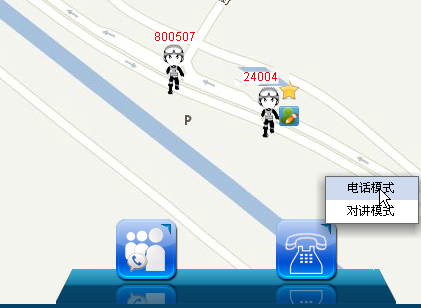
图1.1 选择电话模式
3）此时，呼叫工具栏上“单呼”图标发生变化。状态栏显示“（24004）：对方正在振铃中”。如下图1.2所示：
图1.2 对方振铃中
3）对方接听后，呼叫建立，双方可以同时输入语音信号，并能同时接收到对方语音信息，地图上警员图标侧出现电话模式呼叫下发图标。
图1.3 对方已接听
4）通话结束后，单击＜结束＞图标结束本次通话，此时，呼叫工具栏上“单呼”图标发生变化，状态栏显示“（24004）：对方挂断”。如图1.4所示。
图1.4 呼叫结束
1）若调度台接收到用户“24004”发起的全双工呼叫请求，此时，地图上的用户图标右上角出现电话模式呼叫上行图标，调度台单击＜接听＞即可通话，如图1.5所示。
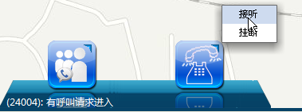
图1.5 全双工呼叫请求进入
2）通话后，呼叫工具栏显示呼叫已连接，如图1.6所示。
图1.6 全双工通话中
3）调度台单击＜挂断＞结束本次呼叫。
1）在系统操作菜单栏中单击［调度功能/呼叫面板］，弹出“呼叫面板”对话框。
2）单击“呼叫业务”模块中的“单呼”，弹出“单呼”对话框。
3）输入无线终端标识号，系统自动获取终端标识对应的姓名、单位及编号，如图2.1所示。
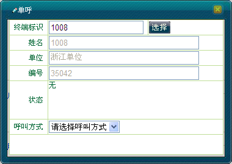
图2.1 单呼对话框
4）选择“呼叫方式”为“电话模式”，单击＜呼叫＞按钮，此时＜呼叫＞按钮变为＜挂断＞按钮，如图2.2所示。
图2.2 对方在振铃中
5）如果收到正常的回铃音且对端用户摘机后，则开始通话，如图2.3所示。
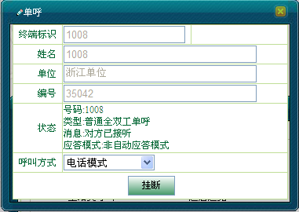
图2.3 正在全双工通话中
6）通话结束后，调度员单击＜挂断＞结束呼叫，此时＜挂断＞按钮变成＜呼叫＞按钮，如图2.4所示。
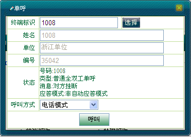
图2.4 结束通话
1）若调度台接收到用户“1008（1008）”发起的全双工呼叫请求，“单呼”对话框显示如图2.5所示。
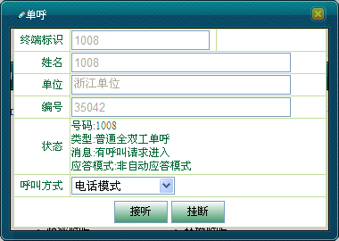
图2.5 呼叫请求进入
2）调度台单击＜接听＞即可通话，双方可以同时输入语音信号，并能同时接收到对方语音信息，如图2.6所示。
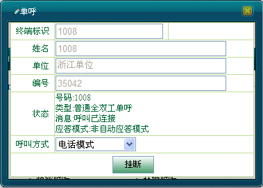
图2.6 呼叫已连接
3）通话结束后，调度员单击＜挂断＞结束呼叫。
1）若调度台接收到用户“1008（1008）”发起的全双工单呼请求，此时，在呼叫上行面板中显示如图3.1所示。
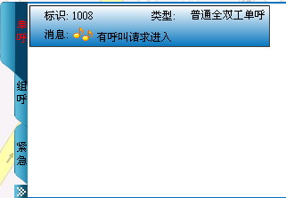
图3.1 有呼叫请求进入
2）将鼠标放至该面板上，将扩展开面板，如图3.2所示。
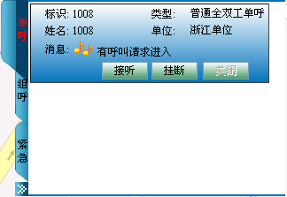
图3.2 扩展面板
3）单击＜接听＞按钮即可进行通话，此时＜接听＞、＜关闭＞两个按钮变灰，如图3.3所示。调度员也可单击＜挂断＞拒绝通话。
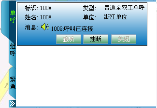
图3.3 呼叫已连接
4）调度员单击＜挂断＞按钮或者终端挂断即可结束本次呼叫，此时＜呼叫＞、＜关闭＞按钮可用，＜挂断＞按钮变灰，如图3.4所示。
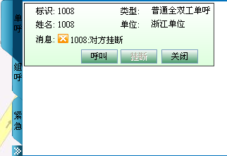
图3.4 结束全双工通话
1）选中呼叫上行面板中的普通全双工单呼面板，单击＜呼叫＞按钮，此时＜呼叫＞、＜关闭＞两个按钮变灰，如图3.5所示。
图3.5 对方在振铃中
2）对方接听后，呼叫建立，双方可以同时输入语音信号，并能同时接收到对方语音信息，面板显示如图3.6所示。
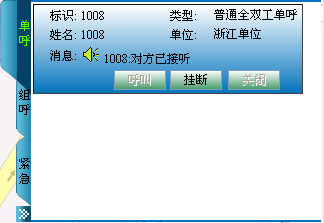
图3.6 对方已接听
3）调度员＜挂断＞按钮或者终端挂断即可结束本次呼叫，此时＜呼叫＞、＜关闭＞按钮可用，＜挂断＞按钮变灰。
 说明：
说明：
同一时刻，调度台只能跟一个用户进行全双工单呼通话。
在呼叫上行面板中，调度员只能对已有全双工单呼上行记录的终端发起全双工单呼。
若调度员对未注册的用户发起呼叫，则会收到“对方挂断”的呼叫消息。
其他发起/接听全双工单呼方法的操作步骤与通过呼叫面板发起/接听全双工单呼的操作步骤类似。
Copyright © 2012 Eastcom, Inc. All rights reserved. |
||